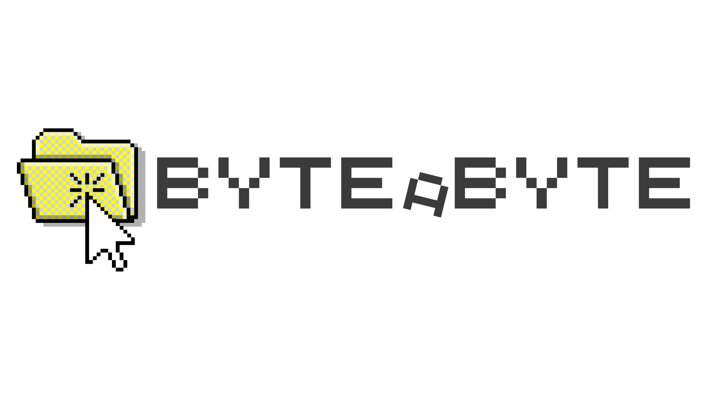

Aprenda a programar do zero!
Queremos desmitificar a tecnologia e mostrar que qualquer pessoa pode programar com a base certa.
// sobre o projeto
O Byte a Byte é um curso de introdução à programação focado em construir um primeiro contato com o código — de forma gradual, byte a byte.
Nosso objetivo não é formar programadores completos, mas mostrar que qualquer pessoa pode dar os primeiros passos nesse mundo usando Python, uma das linguagens mais acessíveis do mercado.
O curso é online, gratuito e conta com 3 aulas, exercícios semanais, 1 avaliação final e monitoria de segunda a sábado.
// estrutura do curso
Cada aula cobre um bloco essencial da programação. Sem pressa, sem pular etapas.
Tipos de Dados
Inteiros, decimais, textos e booleanos. Aprenda como o Python representa e armazena informação.
Condicionais e Laços
Ensine o computador a tomar decisões e a repetir tarefas. O coração da lógica de programação.
Listas e Funções
Organize coleções de dados e crie blocos de código reutilizáveis para resolver problemas maiores.
Exercícios Semanais
Pratique entre as aulas com listas de exercícios de fixação. Os monitores estão disponíveis para ajudar de segunda a sábado.
Avaliação Final
Uma avaliação ao final do curso para consolidar tudo que você aprendeu. É o seu momento de mostrar o quanto evoluiu.
// como funciona
Inscreva-se gratuitamente
Preencha o formulário de inscrição. O curso é online, aberto a qualquer pessoa, sem custo e sem pré-requisitos.
Assista às 3 aulas
Três aulas cobrindo tipos de dados, condicionais e laços, e listas e funções — progressivas e direto ao ponto.
Resolva os exercícios semanais
Pratique o que aprendeu. Nossos monitores estão disponíveis de segunda a sábado para tirar dúvidas.
Faça a avaliação final
Demonstre o que você aprendeu e conclua o seu primeiro contato com a programação.
// suporte
Você não aprende sozinho. Contamos com uma equipe de monitores — todos alunos do Instituto de Informática da UFRGS — disponíveis todos os dias da semana para tirar dúvidas e te ajudar nos exercícios.
// quem está por trás
Somos alunos do Instituto de Informática da UFRGS e alumni do Amanhã Tech, programa do Fundo Amanhã.
Viemos de um ambiente que valoriza tecnologia e aprendizado intenso — onde entendemos que o código é uma ferramenta poderosa de transformação.
Percebemos que, para muitos, a programação parece algo inacessível. Mas a verdade é que a tecnologia deveria ser uma linguagem universal.
Do desejo de tornar essa ferramenta acessível, nasce o Byte a Byte.
Realização
.INF · Instituto de Informática
Universidade Federal do Rio Grande do Sul
Origem
Amanhã Tech
Programa do Fundo Amanhã · Centro de Carreiras
// dúvidas frequentes
// próxima turma
As vagas são limitadas. Inscreva-se agora e dê o primeiro byte na sua jornada de programação.